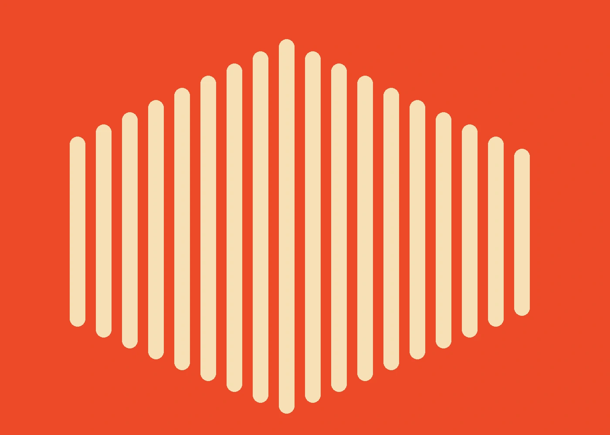
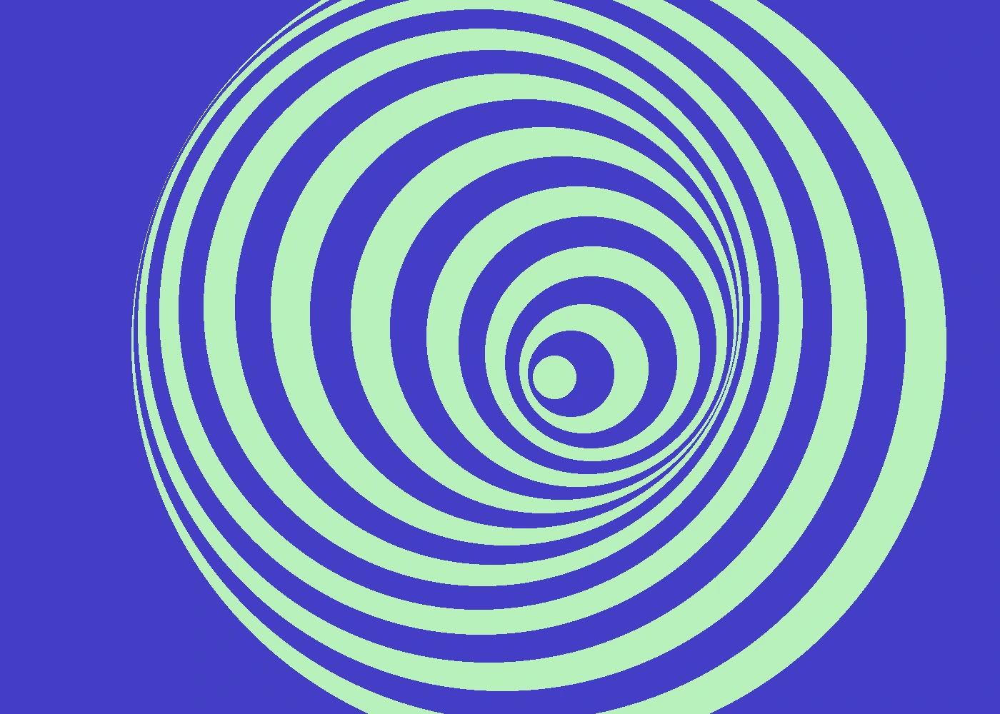
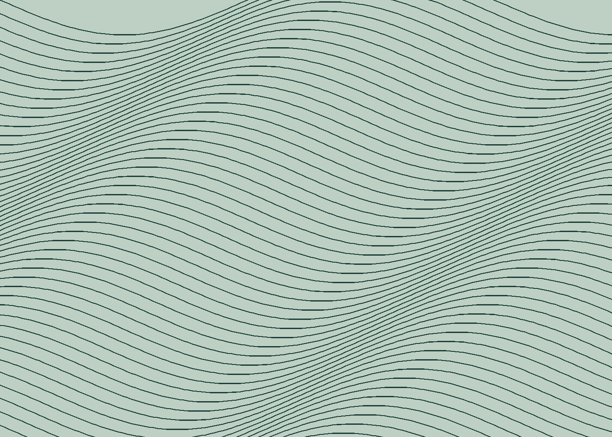

01 / UNDAY
BRAND / 自主制作日常を少し変える、生活道具のブランド。
担当範囲と制作の狙いを見る
担当：コンセプト・コピー・パッケージ
制作内容：ブランド方針1枚と、3種類の商品ラベルを設計した自主制作。
商用顧客の実績ではなく、説明用の架空作品です。
戦略の整理から、ことば、ビジュアル、Webまで。以下は制作内容を説明するためのオリジナル自主制作例です。

日常を少し変える、生活道具のブランド。
担当：コンセプト・コピー・パッケージ
制作内容：ブランド方針1枚と、3種類の商品ラベルを設計した自主制作。
商用顧客の実績ではなく、説明用の架空作品です。

音の余韻を、視覚のリズムへ。
担当：情報設計・Webデザイン・実装
制作内容：イベント情報と申込導線の2つを整理した自主制作。外部受付機能はなし。
商用顧客の実績ではなく、説明用の架空作品です。

土地の表情を届ける、小さな茶葉店。
担当：ブランド設計・アートディレクション
制作内容：紙とWebで共通する視覚ルールをまとめた自主制作。
商用顧客の実績ではなく、説明用の架空作品です。
言いたいことが多いときほど、伝えたいことの芯を探す。ヒアリングから一緒に整理し、読み手の目線でデザインを組み立てます。
ブランドの立ち上げ、サービスの紹介、既存サイトの見直し。事業の規模よりも、向き合う姿勢を大切にしています。
目的・相手・今ある強みを整理する。
情報の優先順位と、届け方を設計する。
実装と表示を確認し、使える形で渡す。
ヒアリング2回・方針シート・コピー方向性。想定期間3週間。
1ページ・デザイン・静的実装・編集ガイド。想定期間4〜6週間。
5ページまで・情報設計・デザイン・静的実装。想定期間8週間。
税込の架空料金例です。写真撮影・原稿作成・CMS・ドメイン・サーバー費は含みません。修正回数・納品形式・追加編集・保証・サポートの範囲と期間は実際の契約前に個別に定めてください。無期限サポートは含みません。
目的や課題の整理から始める想定です。必要な制作物と予算の優先順位を一緒に検討します。
静的HTML・CSS・JavaScriptと編集ガイドを渡す想定です。日常的な更新方法やCMSの要否は制作前に確認してください。
納品物に加え、追加編集・保証・運用サポートは範囲と料金を別途確認する想定です。このサンプルは無期限の無料修正を約束しません。
これは架空事業のサンプルサイトです。
フォームは画面内の確認のみ。送信されません。
個人情報・機密情報は入力しないでください。
注文・予約・契約は成立しません。